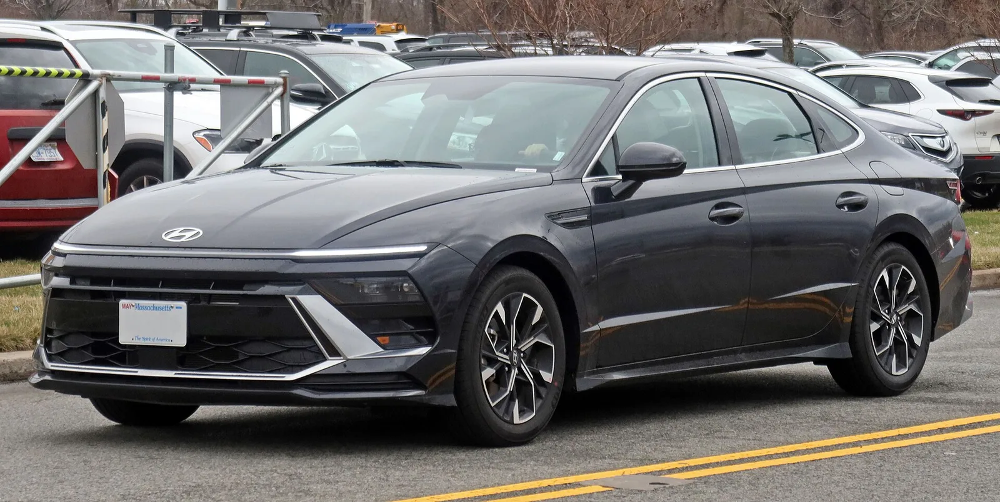
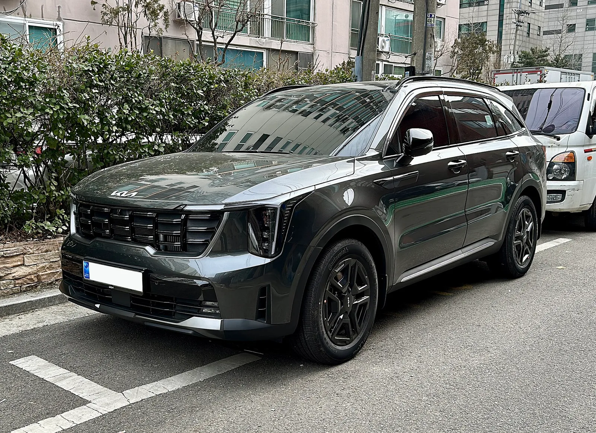
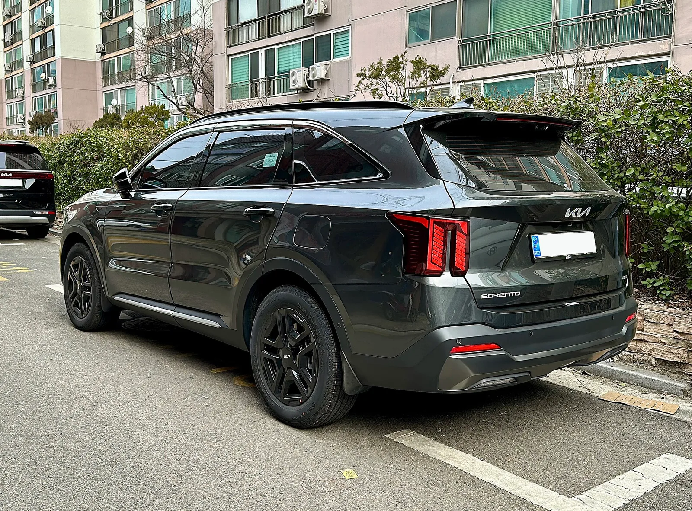
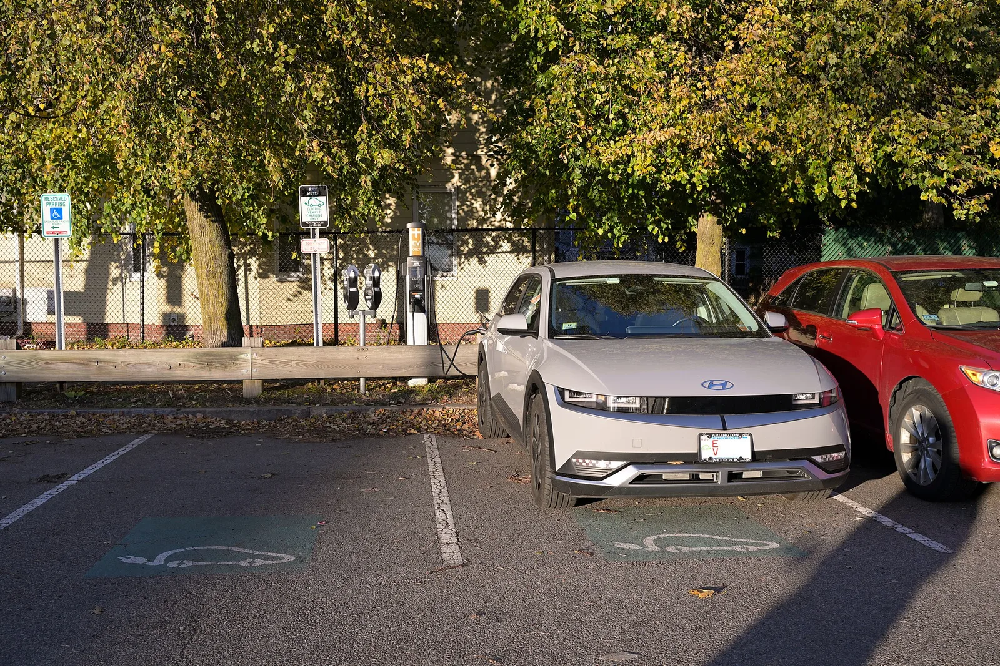
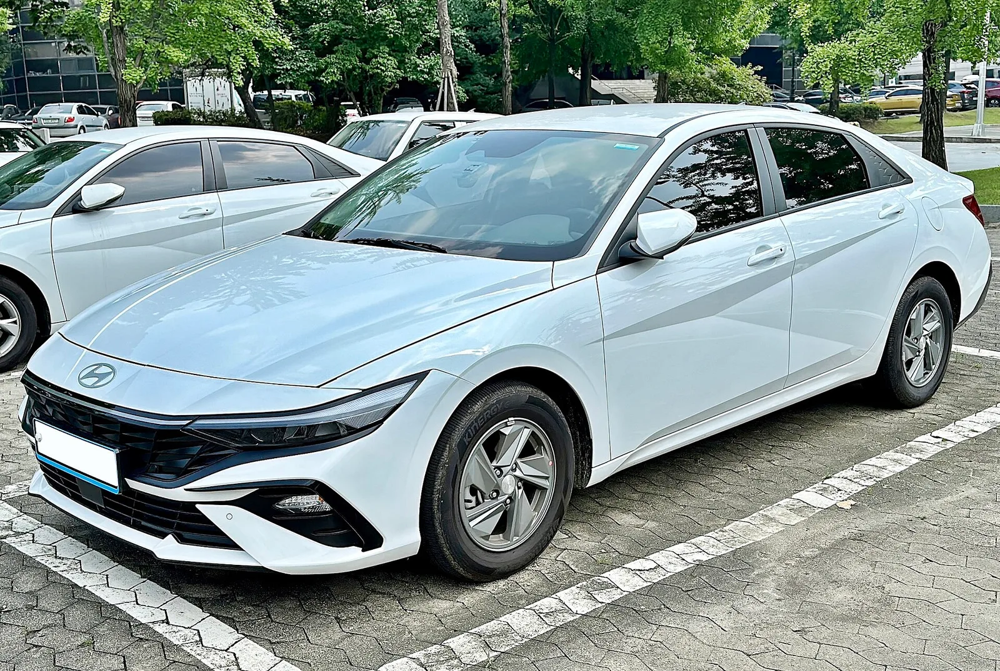
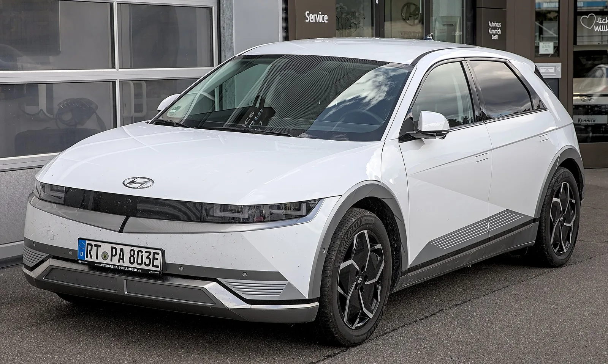
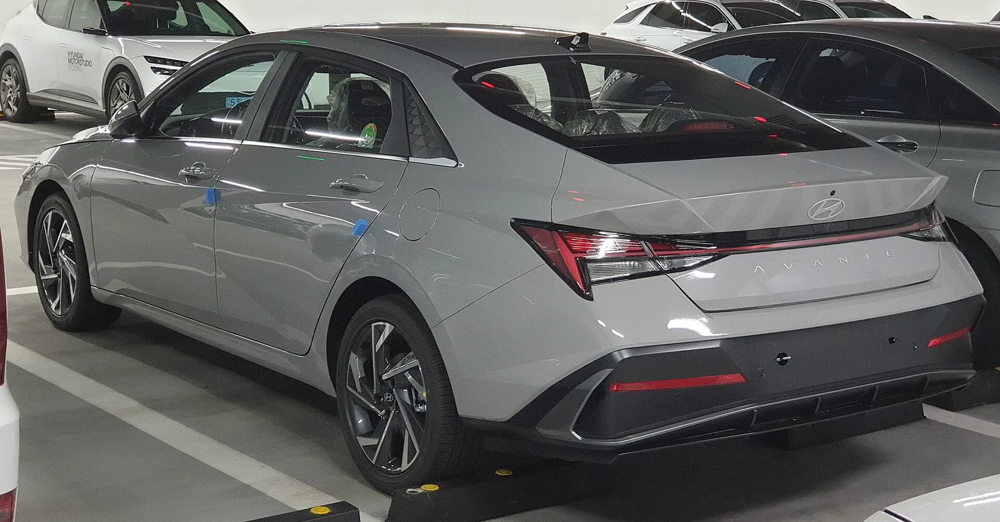
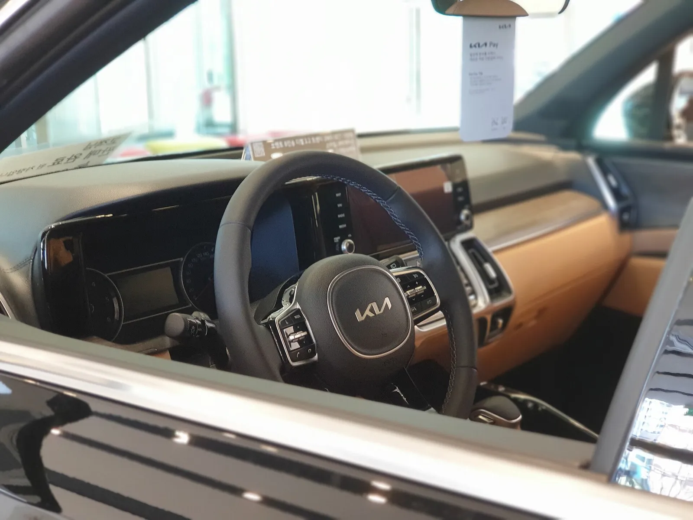
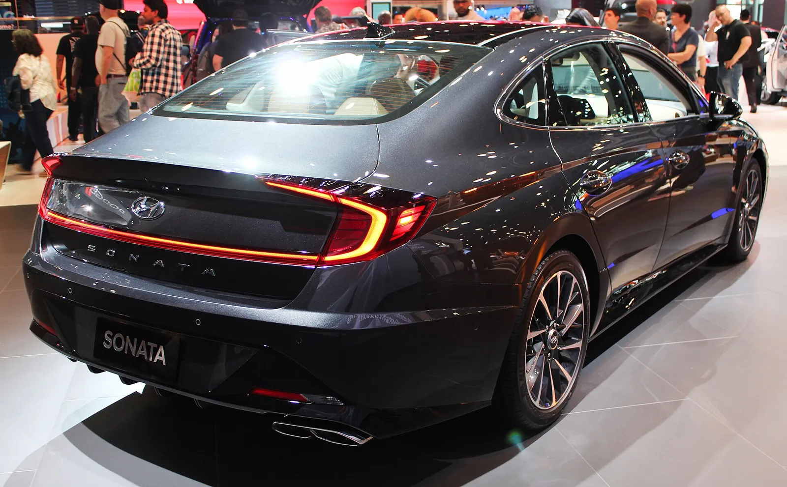

▲ 신차와 3년 중고, 5년 뒤 통장에 남는 돈은 차종마다 다르다 ⓒ Avante2025, CC BY 4.0, Wikimedia Commons
"3년 된 중고차를 사면 신차보다 확실히 싸다." 맞는 말처럼 들리지만, 5년을 타고 되파는 순간까지 계산해 보면 이야기가 달라진다. 3년 된 중고는 사는 값이 싼 대신 팔 때 8년차 차가 되어 감가가 이어지고, 보증이 끝난 뒤라 정비비가 늘고, 중고차 할부 금리는 신차보다 높기 때문이다.
그래서 카프리즘이 같은 틀로 직접 계산했다. 아반떼·쏘나타·쏘렌토 하이브리드·아이오닉5 4대를 놓고 "신차를 사서 5년 보유 후 매각"과 "3년 된 중고를 사서 5년 보유 후 매각"의 총비용을 감가, 취득세, 자동차세, 보험료, 정비비, 연료비, 할부 이자 7개 항목으로 나눠 비교했다. 공개된 가격표와 중고 시세 통계를 쓰되, 공개 자료가 없는 부분은 가정으로 처리하고 추정이라고 표시했다.
1. 비교 틀 — '사는 값'이 아니라 '5년 뒤 통장에서 빠진 돈'
총비용은 (산 값 − 판 값) + 보유 중 쓴 돈이다. 이 글은 아래 식 하나로 모든 차종을 계산했다.
| 구분 | 계산식 | 비고 |
|---|---|---|
| 총비용 | 감가 + 취득세 + 자동차세 + 보험료 + 정비비 + 연료비 + 할부 이자 | 7개 항목 합계 |
| 감가(신차) | 가격표 − 가격표×5년차 잔가율×0.92 | 0.92는 매각 시 딜러 매입가 할인(추정) |
| 감가(중고) | 가격표×3년차 잔가율 − 가격표×8년차 잔가율×0.92 | 중고는 시세 그대로 구입 |
| 보유 기간 | 신차 0~5년차, 중고 3~8년차 (각 60개월) | 연 1만2,000km, 총 6만km |

▲ 2024년형 현대 쏘나타(부분변경) 앞모습. 신차와 3년 중고 비교의 대표 중형 세단이다. ⓒ Kevauto, CC BY-SA 4.0, Wikimedia Commons
📍 이 글에서 '신차'와 '중고'의 의미
신차는 2026년형 가격표 가격을 그대로 낸 경우(프로모션 할인 없음)이고, 3년 중고는 2023년식 평균 시세 수준의 차를 산 경우다. 두 경우 모두 같은 운전자가 같은 주행거리로 탄다고 가정해 보험 할인·할증 경력은 같다고 봤다. 세차·주차·통행료·타이어처럼 두 경우 똑같이 드는 비용은 제외했다.
2. 대표 차종 4대와 공통 가정
차종은 판매량이 많은 준중형·중형 세단, 중형 SUV 하이브리드, 전기 SUV로 골랐다. 신차 가격은 제조사 공개 가격표(개소세 5% 기준)를 썼고, 쏘렌토는 4WD 프레스티지를 대표 트림으로 삼았다. 아반떼는 현대차 공식 가격표의 2,388만원, 쏘렌토 HEV 4WD 프레스티지는 기아 공식 가격표의 4,295만원(세제혜택 전 가격)을 썼다. 쏘나타는 개소세 5% 기준 2,870만원이며, 개소세 3.5%를 적용한 가격(2,826만원)은 쓰지 않았다. 아이오닉5는 개별소비세·교육세 감면 후 가격이다. 가격표는 연식·개소세율·트림 개편에 따라 몇 만원 단위로 바뀌므로, 이번 정정(아반떼 −3만원, 쏘렌토 +5만원)이 신차·중고 판정을 바꾸지는 않는다.
| 차종·트림 | 신차 가격 | 배기량·연료 | 공인 복합연비·전비 |
|---|---|---|---|
| 아반떼 1.6 가솔린 모던 | 2,388만원 | 1,598cc 휘발유 | 14.8km/L(16인치 기준) |
| 쏘나타 2.0 가솔린 프리미엄 | 2,870만원 | 1,999cc 휘발유 | 12.6km/L(17인치 기준) |
| 쏘렌토 HEV 1.6T 4WD 프레스티지 | 4,295만원 | 1,598cc 터보 하이브리드 | 13.8km/L(4WD 17인치 기준) |
| 아이오닉5 롱레인지 2WD E-Lite | 5,064만원(세제혜택 후) | 전기, 배터리 84kWh | 5.2km/kWh(19인치 기준) |
공통 가정은 아래와 같다. 이 표의 숫자가 곧 이 글의 한계이기도 하다.
| 항목 | 가정 | 근거 또는 구분 |
|---|---|---|
| 연 주행거리 | 1만2,000km (5년 6만km) | 추정 |
| 휘발유 가격 | 리터당 1,858원 | 오피넷 전국 평균(2026년 9월 말) |
| 전기 단가 | kWh당 약 230원 | 가정 충전 70%(180원)+공공 충전 30%(347원) 혼합 — 추정 |
| 실연비 보정 | 공인 연비·전비의 90% | 추정 |
| 보험료 | 비자차 40만원 + 자차 차량가액×1.2%(EV 1.5%) | 보험개발원 개인용 평균 68만원에 맞춘 카프리즘 추정식 |
| 정비비(연) | 0~2년차 20만원, 3~4년차 40만원, 5년차 이상 60만원 (차종 배수 적용) | 추정. 쏘나타 1.1배, 쏘렌토 1.3배, EV 0.7배 |
| 할부 | 구입가의 70%, 60개월 원리금균등, 신차 연 6% / 중고 연 8% | 추정 |
| 매각가 | 시세×0.92 | 딜러 매입가 할인 — 추정 |

▲ 기아 쏘렌토 하이브리드(MQ4) 앞모습. 3년 중고 시장에서도 인기가 높아 잔가율이 높은 편이다. ⓒ Benespit, CC BY-SA 4.0, Wikimedia Commons
3. 감가 — 총비용에서 가장 큰 항목
중고 시세는 빅밸류가 6개 채널 매물을 집계한 2026년 9월 연식별 평균 매물가를 썼다. 같은 차종·같은 데이터에서 2026년식 평균 매물가를 100으로 놓고 2023년식(3년차), 2021년식(5년차)이 몇 %인지를 잔가율로 삼았다. 이 비율을 가격표에 곱해 대표 트림에 적용했다.
| 차종(데이터) | 2026년식(기준) | 2023년식 | 2021년식 | 3년차 잔가율 | 5년차 잔가율 | 8년차(추정) |
|---|---|---|---|---|---|---|
| 아반떼 CN7(빅밸류) | 2,958만원 | 2,439만원 | 1,966만원 | 82.5% | 66.5% | 42% |
| 쏘나타 DN8(빅밸류 집계) | 3,619만원 | 2,838만원 | 2,275만원 | 78.4% | 62.9% | 46% |
| 쏘렌토 MQ4(빅밸류) | 4,810만원 | 3,955만원 | 3,320만원 | 82.2% | 69.0% | 45% |
| 아이오닉5(2025년식 기준) | 4,692만원 | 3,300만원 | 2,767만원 | 70.3% | 59.0% | 38% |

▲ 같은 쏘렌토 하이브리드의 뒷모습. 연식별 평균 매물가는 트림과 옵션이 섞인 호가라는 점을 감안해야 한다. ⓒ Benespit, CC BY-SA 4.0, Wikimedia Commons
📍 이 잔가율의 한계 — 꼭 읽어야 하는 이유
연식별 평균 매물가는 트림·옵션·주행거리가 섞인 호가이고 실제 거래가가 아니다. 쏘렌토 수치는 가솔린·디젤·하이브리드가 섞인 MQ4 전체 평균이며, 아이오닉5는 2026년식 데이터를 찾지 못해 2025년식(부분변경 이후)을 기준으로 삼았다. 이 때문에 신차 직후의 첫해 감가가 빠져 EV의 신차 잔가율은 다소 낙관적일 수 있다. 8년차 잔가율은 공개 통계가 없어 같은 데이터의 하락 추세를 이어 붙인 카프리즘 추정값이다.
이를 대입하면 감가는 다음과 같다. 신차는 "가격표 − 5년 뒤 매각가", 중고는 "3년차 매입가 − 8년차 매각가"다.
| 차종 | 신차 매입 | 신차 5년 후 매각 | 신차 감가 | 중고 매입(3년차) | 중고 8년차 매각 | 중고 감가 |
|---|---|---|---|---|---|---|
| 아반떼 | 2,388 | 1,460 | 928 | 1,969 | 923 | 1,046 |
| 쏘나타 | 2,870 | 1,660 | 1,210 | 2,251 | 1,215 | 1,036 |
| 쏘렌토 HEV | 4,295 | 2,727 | 1,568 | 3,532 | 1,778 | 1,753 |
| 아이오닉5 | 5,064 | 2,747 | 2,317 | 3,562 | 1,770 | 1,791 |
✅ 감가에서 읽어야 할 것
· 아반떼·쏘렌토는 3년차 잔가율이 82%대로 중고를 사도 첫 3년 감가를 못 피한다 — 중고가 싸지만 그 차이가 크지 않다
· 쏘나타·아이오닉5는 3년차 잔가율이 70~78%로 낮아 3년치 감가를 이미 판매자가 맞아준 효과가 크다
· 중고는 감가 속도는 느려지지만 8년차 매각가가 낮아 최종 감가액은 신차와 큰 차이 없는 경우도 많다
· 기존 카프리즘 분석 감가율 랭킹과 전기차 손익분기점 계산은 차종 순위와 전기차 손익분기 관점이라 이 글과 비교 틀이 다르다
4. 세금·보험·정비·연료 — 매년 새는 돈
자동차세는 지방세법의 배기량 세율(1,000cc 이하 cc당 80원, 1,600cc 이하 140원, 1,600cc 초과 200원)에 지방교육세 30%를 더한다. 차령 3년차부터 매년 5%씩 줄어 최대 50%까지 경감되고, 비영업용 전기 승용차는 연 13만원(자동차세 10만원+교육세 3만원) 정액이다. 아반떼·쏘렌토 HEV는 1,598cc × 140원 = 22만3,720원에 교육세를 붙여 연 29만836원, 쏘나타는 1,999cc × 200원 = 39만9,800원에 교육세를 붙여 연 51만9,740원이다. 차령 경감(3년차부터 연 5%, 최대 50%)은 신차·중고 모두 해당 차령에 맞춰 반영했지만, 1월 자동차세 연납 할인(법정 공제율 5%, 1월 신청 시 연 세액 기준 실질 약 4.58%)은 반영하지 않았다. 연납을 활용하면 연 29만836원인 아반떼·쏘렌토는 연 약 1만3,000원, 연 51만9,740원인 쏘나타는 연 약 2만4,000원 줄어 5년이면 신차 기준 아반떼 약 6만원, 쏘나타 약 11만원 정도지만 5년 총비용 판정은 달라지지 않는다. 공제율 계산법은 자동차세 연납 정리에 있다.

▲ 충전 구역에 주차된 현대 아이오닉5. 전기차는 연료비와 자동차세가 낮은 대신 감가와 보험료가 변수다. ⓒ 4300streetcar, CC BY 4.0, Wikimedia Commons
| 차종 | 자동차세 | 보험료 | 정비비 | 연료비 | 취득세 |
|---|---|---|---|---|---|
| 아반떼 | 137 / 116 | 315 / 287 | 140 / 260 | 837 / 837 | 152 / 138 |
| 쏘나타 | 244 / 208 | 336 / 304 | 154 / 286 | 983 / 983 | 183 / 158 |
| 쏘렌토 HEV | 137 / 116 | 411 / 359 | 182 / 338 | 898 / 898 | 273 / 247 |
| 아이오닉5 | 65 / 65 | 493 / 400 | 98 / 182 | 295 / 295 | 182 / 249 |
- 보험료: 보험개발원 집계(2024년 기준) 개인용 평균은 약 68만원이다. 이 평균에 맞춘 추정식이라 실제 보험료는 연령·경력·특약에 따라 크게 달라진다. 중고는 차량가액이 낮아 자차 보험료가 줄어든다.
- 정비비: 중고는 3~7년차라 소모품 교환이 늘고 제조사 일반 부품 보증(통상 3년/6만km)이 이미 끝났거나 곧 끝나므로 신차보다 높게 잡았다.
- 연료비: 신차든 중고든 같은 차를 같은 거리 타므로 같게 놓았다. 쏘렌토 HEV 공인 13.8km/L는 4WD 17인치 기준이라 2WD는 더 낫다.
- 취득세: 신차는 부가세를 뺀 가격의 7%를 적용했다. 전기차는 지방세특례제한법 제66조에 따라 취득세 140만원까지 감면(2026년 12월 31일까지)받는 것으로 반영했다. 행정안전부는 2026년 8월 26일 지방세제 개편안에서 100% 감면은 유지하되 한도를 140만원에서 70만원으로 낮추는 안을 발표했다. 입법 예고를 거쳐 국회에 제출될 예정인 정부안일 뿐 확정이 아니며, 시행 시기는 확인한 기사에서 밝히지 않았다. 이 글의 계산은 2026년 구입 기준이라 영향이 없다. 만약 70만원 한도가 적용되는 시점에 신차를 산다면 신차 취득세가 70만원 늘어 아이오닉5의 신차−중고 격차는 약 +494만원에서 +564만원이 된다(단순 가산). 중고는 매입가의 7%로 단순 계산했으며, 실제 과세표준에 따라 달라질 수 있다.
- 하이브리드 취득세 감면은 반영하지 않았다: 하이브리드 취득세 감면(최대 40만원)은 2024년 12월 31일로 일몰 종료돼 현재는 일반 내연기관차와 같은 7%가 적용된다. 쏘렌토 HEV 신차 취득세 273만원은 감면 없이 계산한 값이다. 2026년 말까지 남은 하이브리드 혜택은 개별소비세 감면(최대 70만원)인데, 기아 공식 가격표에서 쏘렌토 4WD 프레스티지는 세제혜택 적용 가격이 따로 표기되지 않아 4,295만원을 그대로 썼다. 하이브리드 감면 종료와 전기차 140만원·2026년 12월 31일 기한은 부산광역시 차량등록사업소 안내에서도 확인된다. 오토트리뷴에서 확인 부산시 안내에서 확인
취득세와 개별소비세 구조는 취득세·개소세 계산 정리에, 전기차 충전 단가는 충전 요금제 정리에 있다.

▲ 현대 아이오닉5 뒷모습(프랑스 번호판). 전기차는 3년차 잔가율이 낮아 중고 쪽 이점이 크게 나왔다. ⓒ crash71100, CC0, Wikimedia Commons
5. 이자 — 중고차 할부 금리가 높으면 격차가 줄어든다
할부 총이자는 월 상환액 × 60 − 대출원금으로 구했다. 월 상환액은 원리금균등 공식 L × r ÷ (1 − (1+r)−60)(r은 월 금리)이다. 연 6%면 원금의 약 16.0%, 연 8%면 약 21.7%가 이자다. 구입가의 70%를 빌린다고 가정하면 아래와 같다.
| 차종 | 신차 대출금 | 신차 이자(연 6%) | 중고 대출금 | 중고 이자(연 8%) |
|---|---|---|---|---|
| 아반떼 | 1,672 | 267 | 1,378 | 299 |
| 쏘나타 | 2,009 | 321 | 1,576 | 341 |
| 쏘렌토 HEV | 3,007 | 481 | 2,472 | 535 |
| 아이오닉5 | 3,545 | 567 | 2,493 | 540 |
📍 금리는 신용도에 따라 다르다
신차 연 6%, 중고 연 8%는 카프리즘의 가정이다. 금리를 두 경우 모두 6%로 같게 두면 중고가 유리한 폭이 더 늘어난다(7장 민감도표 참고). 현금으로 사는 경우에는 이 항목 대신 같은 돈을 예금에 넣었을 때의 기회비용을 넣어야 한다.
6. 5년 총비용 결과 — 4대를 한 표로
| 차종 | 신차 총비용 | 중고 총비용 | 신차 월평균 | 중고 월평균 | km당 비용(신차/중고) | 판정 |
|---|---|---|---|---|---|---|
| 아반떼 | 2,776 | 2,983 | 46만원 | 50만원 | 463원 / 497원 | 신차 207만원 유리 |
| 쏘나타 | 3,431 | 3,316 | 57만원 | 55만원 | 572원 / 553원 | 중고 115만원 유리 |
| 쏘렌토 HEV | 3,949 | 4,247 | 66만원 | 71만원 | 658원 / 708원 | 신차 298만원 유리 |
| 아이오닉5 | 4,017 | 3,523 | 67만원 | 59만원 | 669원 / 587원 | 중고 494만원 유리 |

▲ 현대 아반떼(CN7 부분변경). 가장 대중적인 준중형 세단으로, 3년 중고도 시세 방어가 좋은 편이다. ⓒ Benespit, CC BY-SA 4.0, Wikimedia Commons
| 차종 | 감가 | 취득세 | 자동차세 | 보험료 | 정비비 | 연료비 | 이자 |
|---|---|---|---|---|---|---|---|
| 아반떼 | 928 / 1,046 | 152 / 138 | 137 / 116 | 315 / 287 | 140 / 260 | 837 / 837 | 267 / 299 |
| 쏘나타 | 1,210 / 1,036 | 183 / 158 | 244 / 208 | 336 / 304 | 154 / 286 | 983 / 983 | 321 / 341 |
| 쏘렌토 HEV | 1,568 / 1,753 | 273 / 247 | 137 / 116 | 411 / 359 | 182 / 338 | 898 / 898 | 481 / 535 |
| 아이오닉5 | 2,317 / 1,791 | 182 / 249 | 65 / 65 | 493 / 400 | 98 / 182 | 295 / 295 | 567 / 540 |
✅ 결과를 읽는 법
· 아반떼: 중고는 사는 값이 약 419만원 싸지만 8년차 감가·정비비·이자를 더하면 신차보다 약 207만원 더 든다
· 쏘나타: 3년차 잔가율이 낮아 중고가 약 115만원 유리하지만 8년차 시세 가정 한 칸만 움직여도 거의 동률이 된다
· 쏘렌토 HEV: 감가가 느려 3년 중고가 가격표의 82%에 팔리므로 중고의 이점이 사라진다
· 아이오닉5: 중고가 약 494만원 유리해 보이지만 국비 보조금 최대 567만원(차종·트림별 483~567만원, 2026년 1월 13일 발표 기준을 오토트리뷴 보도로 재확인했고 그 이후 변동은 확인하지 못했다. 이후 바뀔 수 있으며 이후 바뀔 수 있어 환경부 무공해차 통합누리집에서 확인해야 한다)을 신차에 반영하면 신차 약 3,450만원(총비용 4,017만원에서 보조금을 단순 차감한 근사치)으로 중고(3,523만원)와 비슷하거나 앞선다. 보조금을 받으면 취득세·보험료 등 일부 항목이 달라질 수 있어 정확한 값은 아니다. 지자체 보조금은 지역 차가 커 제외했다
7. 민감도 — 가정 하나가 바뀌면 결과가 달라진다
추정에 기대는 계산이라 가장 흔들리는 가정을 바꿔 봤다. 값은 신차 총비용 − 중고 총비용(만원)이다. 양수면 중고가 싸고, 음수면 신차가 싸다.
| 차종 | 기본값 | 8년차 잔가율 −5%p | 8년차 잔가율 +5%p | 중고 금리도 연 6% | 신차 5% 할인 구입 |
|---|---|---|---|---|---|
| 아반떼 | −207 | −313 | −100 | −129 | −351 |
| 쏘나타 | +115 | −13 | +243 | +204 | −58 |
| 쏘렌토 HEV | −298 | −490 | −107 | −158 | −557 |
| 아이오닉5 | +494 | +270 | +719 | +636 | +187 |
해석은 간단하다. 쏘나타는 8년차 시세를 5%p 낮게 보면 거의 동률이 되고, 아반떼는 신차를 5% 깎아 사면 신차 우위가 더 커진다. 신차 프로모션 할인이 있는 시기에는 신차 쪽 저울이 더 기운다. 반대로 8년차 시세가 예상보다 높게 남는 차종은 중고의 마지막 감가가 작아진다.
✅ 내 차에 적용하는 5단계
· 1단계: 신차 가격표와 현재 받을 수 있는 프로모션을 반영해 실구매가를 정한다
· 2단계: 같은 차의 2023년식(3년차)·2021년식 시세를 헤이딜러·엔카에서 찾아 3년차·5년차 잔가율을 직접 뽑는다
· 3단계: 3년차 잔가율이 75% 안팎 이하로 떨어지는 차(이 글에서는 쏘나타·아이오닉5)는 중고를 먼저 본다
· 4단계: 중고 할부 금리가 신차보다 높으면 이자 차이를 총비용에 넣는다
· 5단계: 제조사 보증 승계 여부와 남은 보증 기간을 확인한다. EV 배터리 보증 조건은 승계 여부를 제조사에 문의해야 한다

▲ 현대 아이오닉5 앞모습. 신차와 3년 중고의 가격 차가 큰 대표적인 전기 SUV다. ⓒ Alexander-93, CC BY-SA 4.0, Wikimedia Commons
보험료가 총비용에 미치는 영향은 차량 모델 등급별 보험료 정리에서, 하이브리드와 전기차의 5년 유지비 비교는 니로 EV vs 니로 하이브리드 5년 유지비 계산에서 볼 수 있다.
8. 보유 기간을 3년·5년·7년으로 바꾸면 — 승자는 바뀔까
5년 보유만 놓고 보면 "중고가 낫다"는 결론이 보유 기간 때문일 수 있다. 같은 틀에서 보유 기간(N년)만 바꿔 다시 계산했다. 신차는 0→N년차, 중고는 3→3+N년차까지 타고 판다. 3년차(r3)·5년차(r5)·8년차(r8) 잔가율은 본문 값을 쓰고, 그 사이는 직선으로 이었다. 8년차 이후(7년 보유 중고의 10년차)는 5~8년차의 연간 하락폭을 그대로 연장한 추정이다. 할부 기간은 보유 기간과 같게(36·60·84개월) 두었고, 정비비 구간표(0~2년차 20만원, 3~4년차 40만원, 5년차 이상 60만원)와 자동차세 차령 경감은 해당 차령에 맞춰 넣었다.
| 차종 | 3년 보유 | 5년 보유(본문) | 7년 보유 |
|---|---|---|---|
| 아반떼 | −166 | −207 | −201 |
| 쏘나타 | +28 | +115 | +133 |
| 쏘렌토 HEV | −142 | −298 | −297 |
| 아이오닉5 | +596 | +494 | +538 |
세 기간 모두 승자는 같다. 아반떼·쏘렌토 HEV는 신차, 쏘나타·아이오닉5는 중고다. 다만 쏘나타는 3년 보유에서 격차가 28만원으로 사실상 동률이고, 오래 탈수록 중고 쪽이 조금씩 벌어진다. 아반떼·쏘렌토는 5년과 7년의 격차가 거의 같아 "오래 탈수록 중고가 유리해진다"는 통념은 이 계산에서 확인되지 않았다. 7년 보유의 10년차 시세가 추정이라 7년 열은 3년·5년 열보다 신뢰도가 낮다.

▲ 주차장에 서 있는 회색 현대 아반떼(CN7 부분변경) 뒷모습. 사진 속 차의 트림은 확정하지 않는다. ⓒ Damian B Oh, CC BY-SA 4.0, Wikimedia Commons
9. 연 주행거리가 8,000km·1만2,000km·2만km라면
연료비는 신차든 중고든 같은 차를 같은 거리 타므로 똑같이 늘고 줄어, 연료비만으로는 격차가 변하지 않는다. 격차를 움직이는 것은 정비비다. 이 비교에서는 연 정비비가 주행거리에 비례한다고 가정(추정)해 정비비가 더 큰 중고가 주행거리와 함께 불리해지도록 했다. 보험료·자동차세·취득세·이자는 주행거리와 무관하게 고정하고, 주행거리에 따른 8년차 시세 변화는 반영하지 않았다(주행거리가 많으면 시세가 더 낮아질 가능성은 있지만 수치로 확인한 자료가 없다).
| 차종 | 연 8,000km | 연 1만2,000km(본문) | 연 2만km |
|---|---|---|---|
| 아반떼 | 2,451 / 2,617 (−166) | 2,776 / 2,983 (−207) | 3,428 / 3,714 (−286) |
| 쏘나타 | 3,052 / 2,893 (+159) | 3,431 / 3,316 (+115) | 4,189 / 4,162 (+27) |
| 쏘렌토 HEV | 3,589 / 3,835 (−246) | 3,949 / 4,247 (−298) | 4,669 / 5,071 (−402) |
| 아이오닉5 | 3,886 / 3,364 (+522) | 4,017 / 3,523 (+494) | 4,279 / 3,841 (+438) |
많이 탈수록 신차 쪽으로 기운다. 연 2만km에서 쏘나타는 격차가 27만원으로 줄어 사실상 동률이 되고, 아반떼·쏘렌토는 신차 우위가 커진다. 아이오닉5는 연료비 자체가 작아 격차가 494만원에서 438만원으로 소폭 줄 뿐 중고 우위가 유지된다. 차종별 km당 비용은 연 2만km에서 신차 기준 아반떼 343원, 쏘나타 419원, 쏘렌토 HEV 467원, 아이오닉5 428원이다. 이 표는 정비비 비례 가정에 기대므로 방향만 참고하는 것이 안전하다.

▲ 기아 쏘렌토(MQ4) 운전석 쪽 실내를 창 너머로 본 모습. 사진 속 차의 연식과 구동 방식은 확정하지 않았다. ⓒ Damian B Oh, CC BY-SA 4.0, Wikimedia Commons
10. 신차를 5%·10% 깎아 사면 — 중고가 이기려면 얼마나 싸야 하나
신차 프로모션이나 재고 할인이 있으면 저울이 기운다. 여기서는 거꾸로 "3년 중고를 가격표의 몇 %에 사야 신차와 총비용이 같아지나"를 구했다. 신차를 d만큼 할인해 사는 경우의 총비용을 먼저 계산하고(할인은 매입가에만 반영, 5년 뒤 매각가는 가격표 기준 잔가율 그대로), 중고 총비용이 그 값과 같아지는 3년차 잔가율(r3)을 이분법으로 풀었다. r3가 변하면 중고 매입가·취득세·이자·보험료가 함께 변하고, 8년차 매각가는 고정이다. 중고 매입가율이 아래 값 이하여야 중고가 이긴다.
| 차종 | 본문 3년차 잔가율 | 신차 정가 구입 | 신차 5% 할인 | 신차 10% 할인 |
|---|---|---|---|---|
| 아반떼 | 82.5% | 75.5% (1,804) | 70.7% (1,689) | 65.9% (1,574) |
| 쏘나타 | 78.4% | 81.6% (2,343) | 76.8% (2,205) | 72.0% (2,067) |
| 쏘렌토 HEV | 82.2% | 76.7% (3,293) | 71.9% (3,086) | 67.0% (2,879) |
| 아이오닉5 | 70.3% | 78.1% (3,954) | 73.3% (3,710) | 68.4% (3,466) |
읽는 법은 간단하다. 본문 3년차 잔가율이 손익분기보다 낮으면 중고가 이기고, 높으면 신차가 이긴다. 신차를 5% 깎을 때마다 손익분기 잔가율이 약 4.8%p씩 내려간다. 그래서 쏘나타는 정가 구입에서는 중고(78.4% < 81.6%)가 이기지만 5% 할인(76.8%)부터 신차가 앞서고, 아이오닉5도 10% 할인(68.4%)이면 신차가 중고(70.3%)를 앞선다. 반대로 아반떼·쏘렌토는 10%를 깎아도 중고가 이기려면 가격표의 66~67%에 사야 하는데, 3년차 시세가 82%대라 신차가 계속 이긴다.
✅ 이 표를 쓰는 방법
· 같은 차의 3년 중고 시세를 가격표 대비 %로 바꾼다(중고 시세 ÷ 신차 가격표)
· 그 값이 신차 실구매가 할인율에 해당하는 열의 손익분기보다 낮으면 중고, 높으면 신차 쪽이다
· 이 표는 이 글의 가정(할부 신차 6%·중고 8%, 정비비·보험료 추정식)을 전제로 한 값이며, 개별 견적의 이자율이나 보험료가 다르면 손익분기도 달라진다
· 중고 매각 시세와 딜러 매입 구조는 딜러 vs 플랫폼 매입 비교에서, 할부와 현금의 차이는 리스·할부·현금 비교에서 볼 수 있다

▲ 모터쇼에 전시된 현대 쏘나타(DN8) 뒷모습. 3년 중고 시장에 나오는 세대이지만 사진 속 차의 연식과 트림은 확정하지 않는다. ⓒ Kevauto, CC BY-SA 4.0, Wikimedia Commons
11. 이 계산이 말해주지 않는 것
- 실거래가가 아니다: 중고 시세는 매물 호가 평균이다. 실제 거래는 협상으로 더 내려가는 경우가 많다.
- 개체 차이: 3년 중고는 주행거리, 사고 이력, 정비 이력에 따라 같은 연식도 수백만원 차이가 난다. 사고·침수 이력은 성능점검기록부 보는 법으로 반드시 확인해야 한다.
- 미래 시세: 8년차 잔가율은 현재 8년 된 차 시세가 아니라 추세를 이어 붙인 추정이다. 신모델 출시, 유가, 보조금 변화로 달라질 수 있다.
- 확인하지 못한 값: 아이오닉5 2026년식 중고 시세, 중고차 취득세의 정확한 과세표준, 쏘렌토 HEV 단독 시세는 공개 통계에서 확인하지 못해 가정으로 처리했다. 보유 기간 7년 열의 10년차 시세와 주행거리별 정비비 비례도 확인한 자료가 없는 추정이다. 전기차 보조금은 2026년 1월 발표 이후의 변동분을, 중고 시세는 9월 이후 변동분을 확인하지 못했다.
12. 요약
3년 중고가 늘 싼 것은 아니다. 카프리즘 추정(연 1만2,000km, 5년 보유)으로는 쏘나타(중고 약 115만원 유리)와 아이오닉5(보조금 제외 시 약 494만원 유리)는 중고가, 아반떼(신차 약 207만원 유리)와 쏘렌토 HEV(신차 약 298만원 유리)는 신차가 앞섰다.
결론을 가르는 것은 3년차 잔가율과 8년차 매각가다. 3년차 잔가율이 높은 인기 차종은 중고의 이점이 작고, 잔가율이 낮은 차종과 EV는 중고의 이점이 크다. 다만 EV는 국비 보조금(1월 기준, 이후 변동 가능)을 단순 차감하면 신차가 따라잡는다.
보유 기간을 3·5·7년으로 바꿔도 승자는 같았고, 연 2만km처럼 많이 탈수록 신차 쪽으로 기울었으며, 신차를 5% 깎을 때마다 손익분기 잔가율이 약 4.8%p 내려갔다(쏘나타는 5% 할인부터, 아이오닉5는 10% 할인부터 신차가 앞선다). 이 글의 숫자는 매물 호가 평균과 가정 기반 추정이므로, 구매 전에는 같은 틀에 실제 견적과 시세를 넣어 다시 계산해 보는 것이 가장 정확하다.